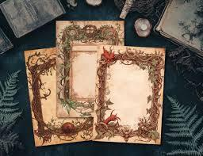

Descubran lo que nunca debió ser visto.
El repositorio de la belleza censurada y el misterio olvidado.
Expediente del Arte Perdido
El Manuscrito de las Sombras
Obra: Poesía visual perdida.
Descripción: Se dice que sus páginas cambian de contenido al mirarlas...
Creadores

Carlos Manuel Perdomo Zorrilla
Matrícula: 24-EISN-2-006
Portafolio
Wanner Onasis Encarnación Lorenzo
Matrícula: 21-SISN-2-051
Portafolio
Jean Carlos Rodriguez Baez
Matrícula: 23-EISN-3-008
Portafolio
Roberto Charle Bacilio
Matrícula: 23-MISN-2-019
Portafolio